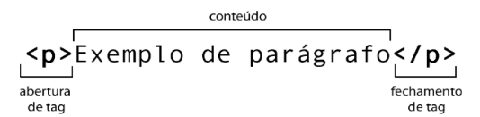
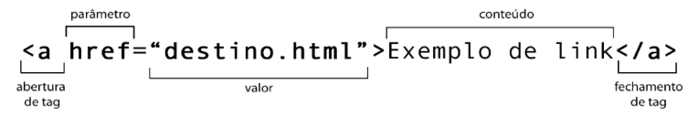
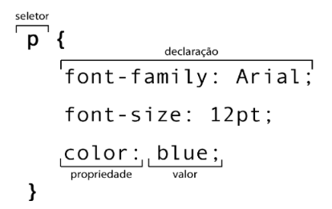
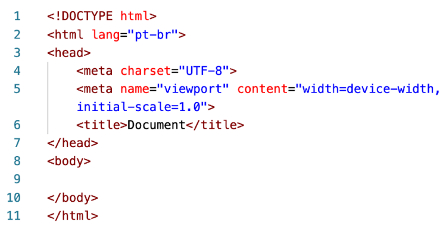

Esse site é feito apenas com Html e Css, e futuramente com JavaScript.
WebData é um site feito por um desenvolvedor front-end iniciante, e tem
como objetivo guardar algumas informações sobre tags entre outras coisas
relacionadas a Html e Css.
Algumas coisas que voce precisa saber
“Eu programo em HTML”
Talvez você já tenha ouvido alguém falar a frase acima. Geralmente ela é dita por pessoas iniciantes ou então aqueles que se baseiam apenas na capa de um único livro da série Head First (use a cabeca), que estampa na capa “programação em HTML5”.
Acontece que a propria sigla ja entrega seu objetivo: Hypertext Markup Language traduzido para o bom e velho Português significa Linguagem de Marcação Hipertexto. Você vai notar daqui a pouco que ela não funciona com instruções, como toda linguagem de programacdo. A HTML é baseada em marcações chamadas tags, e elas comandam tudo.
Além disso, o termo “programação” envolve estruturas especializadas que dependem do uso de variaveis simples e compostas, condições, laços e até coisas mais complexas como objetos. Nada disso existe na HTML nem nas CSS. Por outro lado, todas essas caracteristicas estao presentes na linguagem JavaScript. Essa sim é uma Linguagem de Programação.
HTML trabalha fundamentada apenas nas marcas ou etiquetas (do Inglês tag) e as CSS funcionam baseadas nos seletores, propriedades e valores. Você vai entender mais sobre isso mais pra frente.
Sendo assim, em breve você tera a base suficiente para conseguir dizer com certeza que HTML e CSS não são linguagens de programacao.
Para que serve HTML, CSS e JS?
Uma das coisas mais importantes para quem esta comecando o desenvolvimento de sites é compreender para que serve esse trio de tecnologias, que geralmente são estudados em conjunto. Basicamente, de forma resumida, temos um panorama simples:
Html
Conteúdo
Css
Estilo
JavaScript
Interatividade
Guarde bem a tabela anterior sempre que você precisar decidir qual linguagem vai utilizar em cada situação.
Abra ai o seu site de noticias favorito. Ao abrir uma determinada noticia, você vai ver o texto, as imagens, os vídeos e todo aquele conteúdo que compõe a noticia em si. Isso tudo foi criado em HTML. Ela é focada em conteúdo.
Agora preste atenção nas cores, na posição dos componentes e organizacao visual do contetdo em colunas, blocos visuais e tudo mais. Tudo foi definido em CSS. Ela é focada no design/estilo.
Finalmente, provavelmente existe o menu do site. Quando vocé clica nele, acontece uma animação. Ao mover o mouse sobre as sessões, é possivel que acontecam algumas interações interessantes. Isso foi desenvolvido com ajuda de JavaScript. Ela é uma linguagem focada nas interações.
Tags HTML, ai vamos nos
Como eu ja disse anteriormente, a HTML funciona baseada em marcações especificas chamadas tags. Uma tag é um conjunto de palavras entre sinais de colchetes angular, conforme representado a seguir.

Na imagem anterior, você consegue perceber o uso da tag <p> para a criação de um paragrafo simples. A maioria das tags possuem uma abertura e um fechamento, e você identifica isso pela presença da barra no fechamento da tag.
Além disso, as tags também podem ter atributos e valores, que vão configurar seu comportamento:

Uma mesma tag pode ter vários parametros, cada um com seu valor. Entretanto, algumas tags não possuem a necessidade de conteúdo interno e por isso não possuem fechamento. É o caso, por exemplo, das tags <br> e <img>. Isso é algo natural, não se preocupe com isso agora.
Eu ainda uso <font>, <center>, <s>,
<u>, ...
Com o surgimento da versão 5 da HTML, algumas tags simplesmente deixaram de existir ou tornaram-se obsoletas. Uma tag obsoleta pode até estar funcionando noseu navegador hoje em dia, mas a própria W3C - consórcio responsavel por manter as especificagdes da linguagem - recomenda que elas não sejam mais usadas pelos profissionais e aos poucos não serão mais suportadas pelos navegadores nas suas futuras versões.
De forma simples e direta (vou até escrever “gritando” aqui, pra dar énfase): NÃO USE TAGS OBSOLETAS NO SEU SITE!
Chegou a vez dos seletores CSS
Como já vimos anteriormente, as CSS são as Cascading Style Sheets (Folhas de Estilo em Cascata). Elas são usadas para configurar um resultado visual dos elementos HTML.
As configuragdes das CSS são realizadas através dos seletores. Vamos ver a anatomia de um seletor.

O seletor apresentado anteriormente vai configurar o visual dos elementos de parágrafo do site corrente. O uso das chaves delimita todas as declarações relativas ao seletor atual. No seletor que eu te mostrei, serão feitas três configurações:
A fonte escolhida foi Arial.
Otamanho da letra sera 12pt (pontos).
Acor da letra sera azul.
Note que, ao final de cada declaração, temos que colocar ponto-e-virgula para indicar que ela se encerrou.
Todas as propriedades devem ter seu valor, e eles devem ser separados por dois pontos. Você não é obrigado(a) a usar nenhuma declaracdo especifica. Só utilize a propriedade que você realmente deseja alterar.
Estrutura básica de um documento
HTML
Ao criar um novo documento HTML, devemos sempre escrever a estrutura básica de um documento desse formato. Vamos analisar cada uma das 11 linhas que compõem esse documento base.

Linha 1: Indica que o documento atual será escrito na versdo mais atualizada da linguagem (no caso, HTML5)
Linhas 2 e 11: Delimitam o documento HTML, que é sempre dividido em duas partes: a cabeça e o corpo. Na linha 2, também estamos indicando que o conteúdo desse site será no idioma Português do Brasil.
Linhas 3 e 7: Delimitam a cabeça da pagina, local onde são realizadas algumas configurações iniciais como formatos, estilos, icone de favoritos, etc.
Linha 4: adiciona ao documento atual o suporte a caracteres acentuados. Remover essa linha pode causar erros de renderização de algumas letras na tela.
Linha 5: Indica que o conteúdo aparecerá, por padrão, ocupando todo o espaço disponivel da tela e com uma escala de 1:1.
Linha 6: Configura o titulo da página, que aparecerá como identificação da aba do navegador, ao lado do favicon.
Linhas 8 e 10: Delimitam o corpo da página, a maior porção do site, que vai aparecer na tela. É aqui onde colocaremos todo o nosso conteúdo.